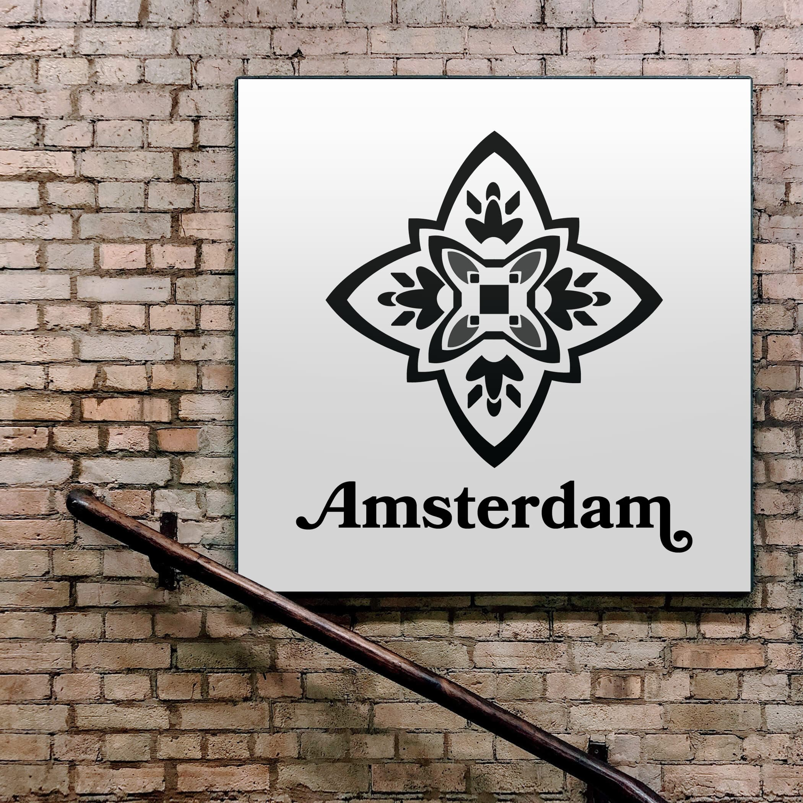
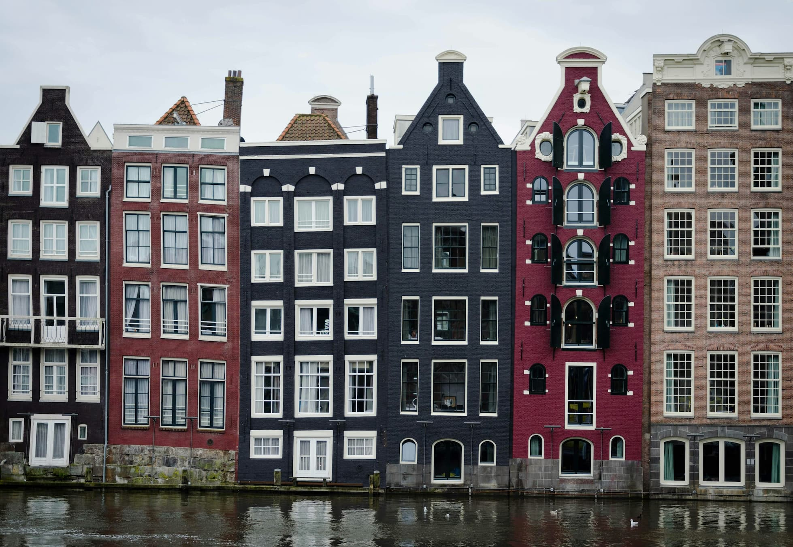
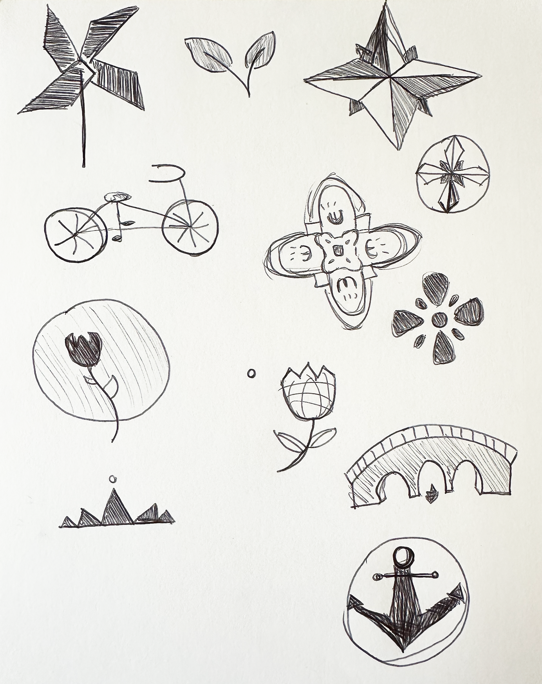
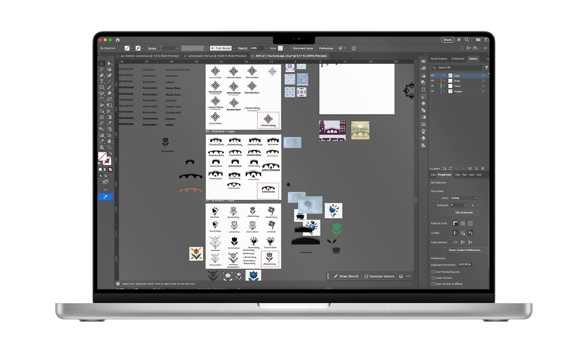
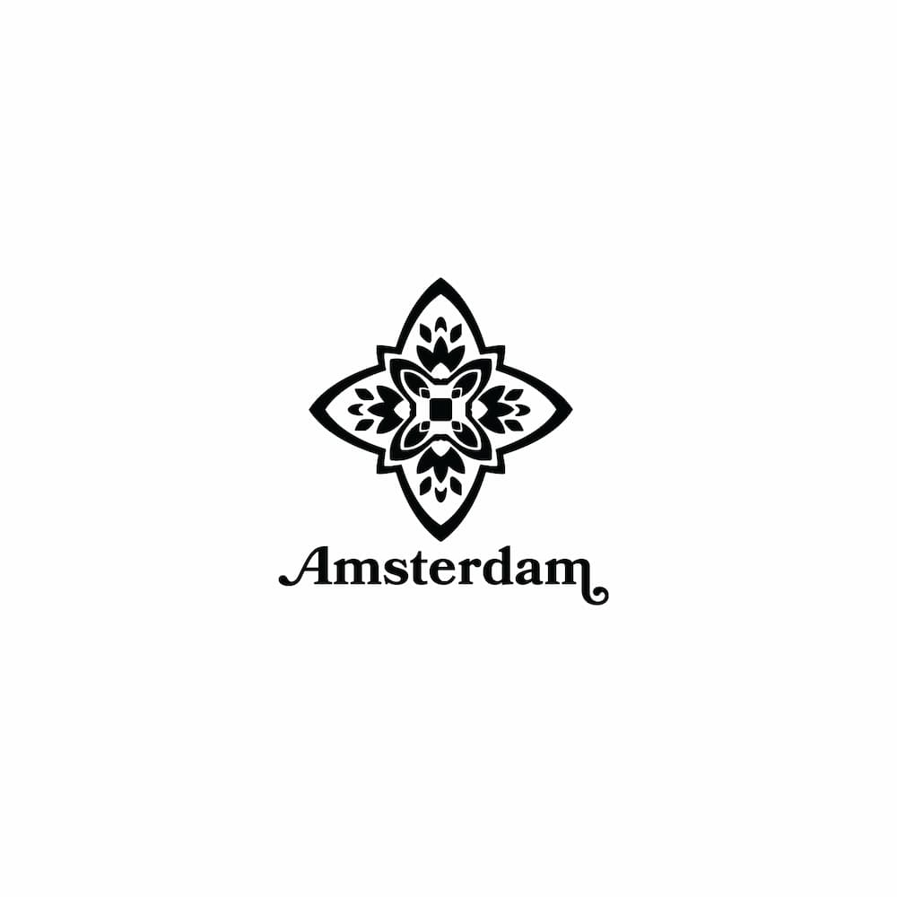
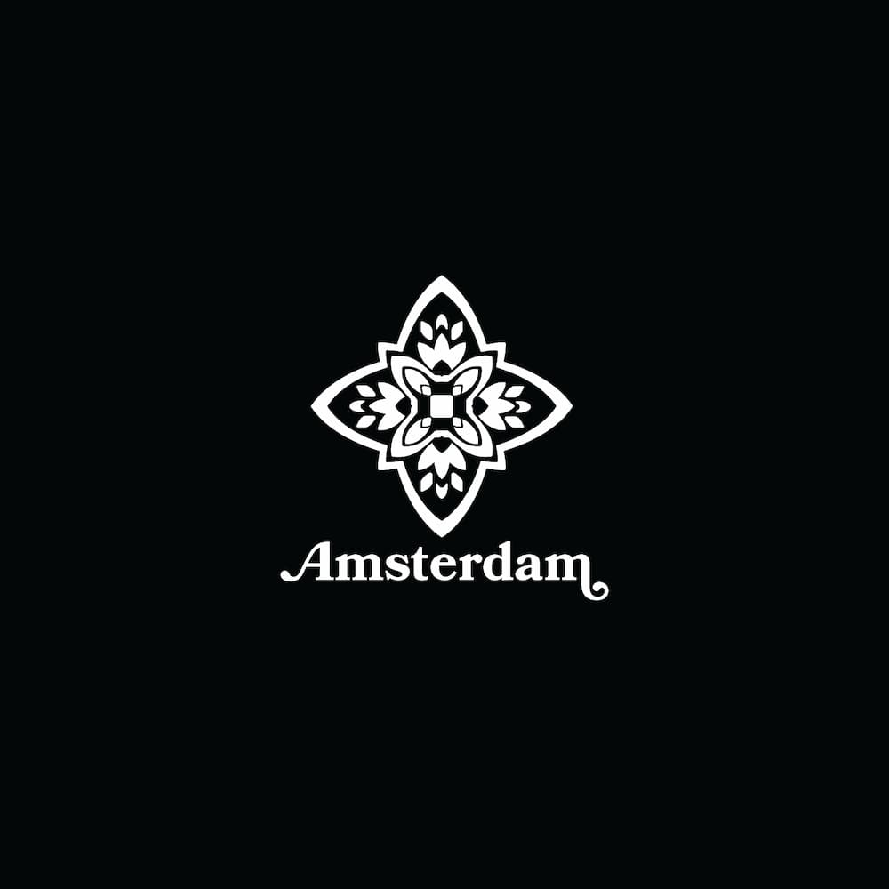
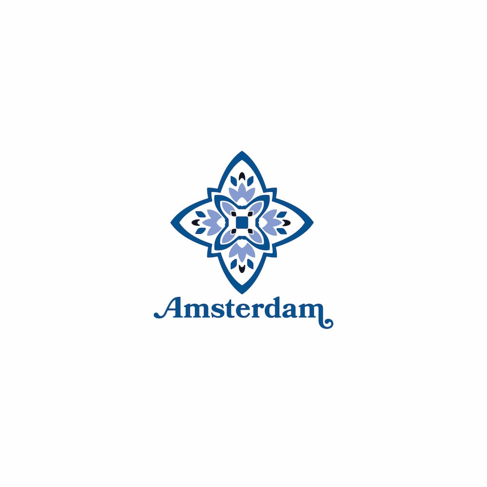

The Challenge
How can one symbol represent the identity of Amsterdam — its culture, history, and unique character — in a way that feels authentic and timeless?

The Solution
I developed a logo inspired by Amsterdam’s defining elements — water, bridges, cycling, tulips, and cultural heritage — to create a simple yet expressive symbol that reflects the city’s spirit and visual identity.

My Approach
Explore Meaning First
Researched the city’s culture, landmarks, and character to identify visual cues worth representing.
Extract Core Elements
Focused on iconic motifs (canals, bridges, tulips, cycling) as the foundation of the mark.
Abstract with Intention
Combined abstract shapes and patterns to create a mark that carries meaning without literal complexity.

In Conclusion
This logo distills Amsterdam’s identity into a single, adaptable brand mark. The result balances cultural storytelling with visual clarity, demonstrating an ability to design meaningful logos that are both rooted in research and visually striking.


